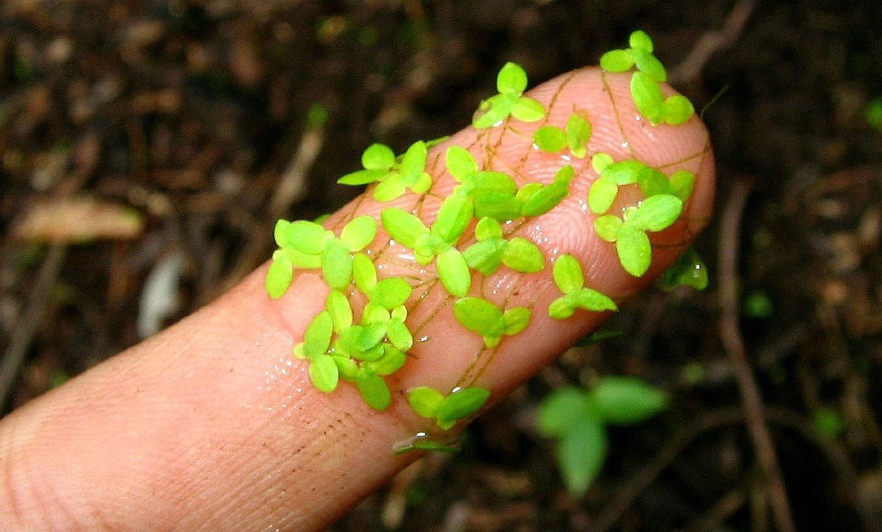
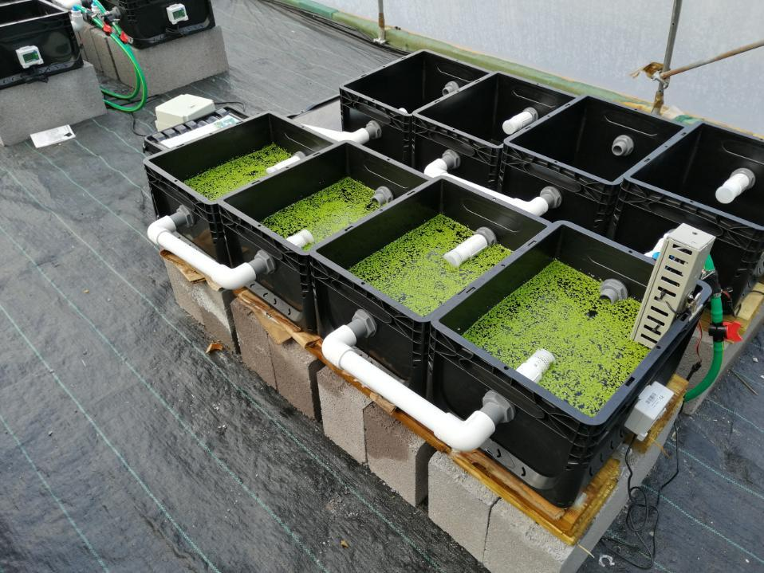
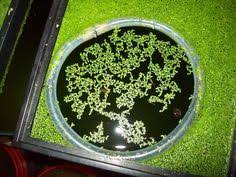

Uma das formas mais eficientes e sustentáveis de alimentar os peixes no seu sistema é cultivar a Lemna, popularmente conhecida como Lentilha d’água.

Lemna: Pequena no tamanho, gigante no valor nutricional.Segundo a Wikipedia:
"Lemna minor é uma pequena planta aquática, conhecida pelo nome comum de lentilha-de-água, com distribuição cosmopolita. Apresenta uma morfologia muito simplificada com o seu corpo vegetativo reduzido a uma estrutura taloide semelhante a uma minúscula folha flutuante. As plantas submergem ligeiramente para florescer."
"Cresce com tanta rapidez e eficiência que pode provocar grandes danos em ecossistemas desequilibrados, como é o caso do Lago de Maracaibo. Desde a sua aparição no lago, o problema tem aumentando progressivamente, tendo sido já medidos mais de 136 000 ha de Lemna."
De fato, a Lemna cresce com uma velocidade impressionante. No vídeo abaixo, você pode observar como ela dobra sua biomassa, de forma exponencial, a cada 3 dias aproximadamente.
Peixes como carpas, cascudos e kinguios, além da própria tilápia, apreciam muito a Lemna. Por ser uma excelente fonte de proteínas e fibras, ela é o complemento ideal para reduzir custos com ração industrializada.
Suplementação e Ferramentas para Cultivo
Existem várias formas de integrar a Lemna no seu sistema de Aquaponia:
1. Cultivo em paralelo: Pode-se utilizar uma cama de cultivo dedicada, com um Sifão de Bell, permitindo que a planta cresça separada dos peixes. Isso evita que eles comam toda a produção antes dela se multiplicar.

Cama de cultivo de Lemnas: Produção controlada e protegida.Dessa forma, as Lemnas podem ser retiradas manualmente para alimentação ou, se o Sifão de Bell estiver bem regulado, ele pode drenar o excesso automaticamente para o tanque de peixes.
2. Cultivo interno no tanque: Outra forma é utilizar uma peneira ou barreira flutuante (feita com mangueira ou isopor). As Lemnas ficam isoladas no centro e crescem protegidas; apenas o excesso que "vaza" pelos lados é consumido, permitindo que os peixes se alimentem sozinhos puxando as raízes por baixo.

Lemna isolada no tanque: Alimentação autossustentável.Alimentação de Alta Performance para seus Peixes
A Lemna é, de fato, um super alimento. Rica em nutrientes e com crescimento exponencial, ela é utilizada mundialmente inclusive para tratar águas residuais e alimentar animais de grande porte.
Para manter a qualidade da água onde suas Lemnas e peixes vivem, não esqueça de conferir a importância da TPA (Troca Periódica de Água).